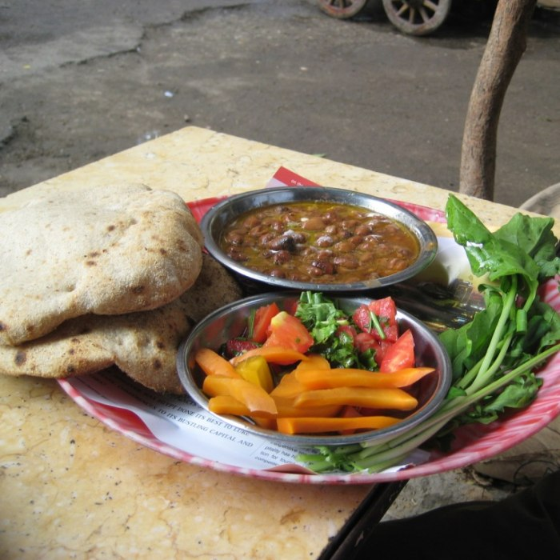

MEALS

Baingan Bharta
.jpg)




Baingan Bharta
PERSONALIZE YOUR EXPERIENCE
vegetarianism is the practice of abstaining from the consumption of meat(red meat,poultry,sead,and the flesh of any other animal),and many also include abstention from by-product of animal slaughter.Vegetarian may be adopted for various reaons.Many people object to eating meat out of respect for sentient life.such ethical motivations have been codified under various religious beliefs,as well as animal right advocacy. other motivations for vegetarianism are health-related.political,environmental,cultural,asethetic,economic,or personal preference.There are variations of the diet as well an ovo-lacto vagetarian diet includes both eggs and dairy products,an ovo-vegetarian diet includes egg but not dairy products,and a lacto-vegetarian diet includes dairy product but not eggs.A vegan diet excludes all animal products,including eggs and dairy. Some vegans aslo avoid oter animal products such as beeswax,leathr or silk clothing,and goose-fat shoepolish.